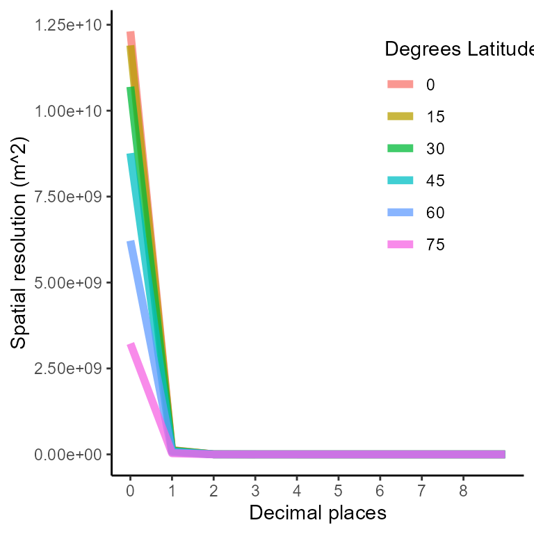
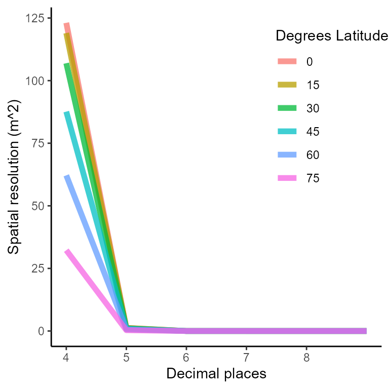
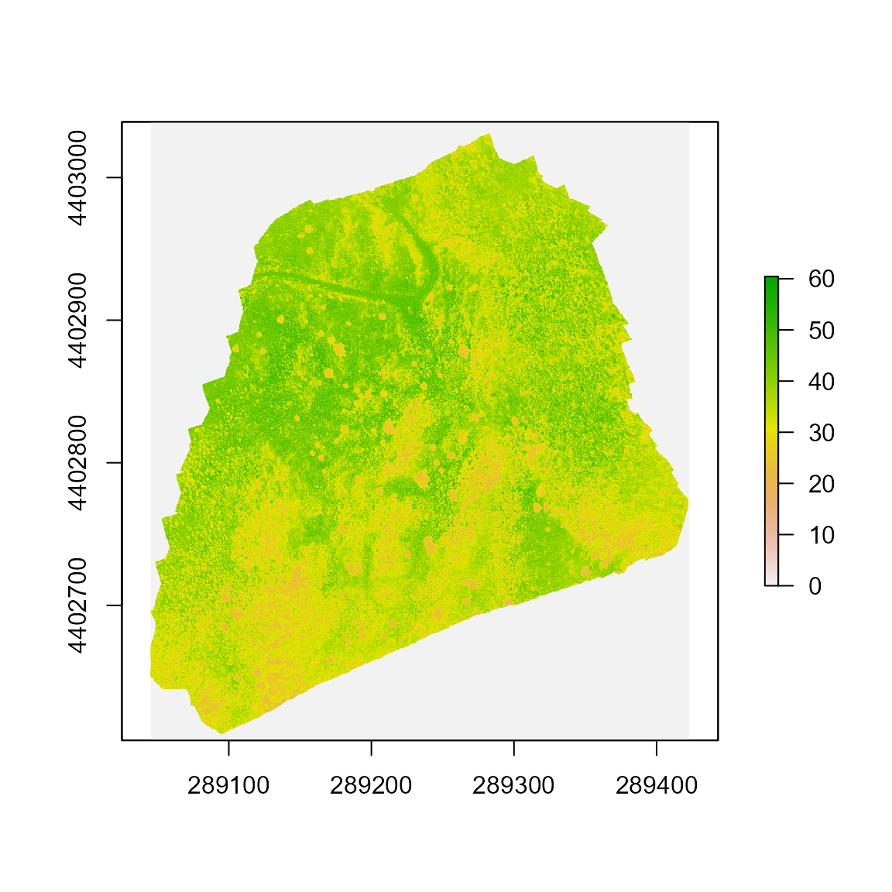

Reading & processing .TIF drone files
read_n_process_tif_drone_files.RmdThe goal of this vignette is to show the process behind the function
read_n_process_tif. This function allows you to read a
.TIF file of a drone flight (obtained by processing drone
imaging using the Pix4D software) and process it into a
tibble, a data.frame data structure that makes
this data easy to manipulate with R. To successfully use
this function you will need to install the following packages in your
system:
Luckily, these packages are included as imports for the
throne package so once you install and load it, they will
be automatically installed and loaded with it.
Step 1: Defining file path and processing information
First thing is to define the location of the .TIF file
you want to process. This kind of files are usually pretty big and
exceed Git Hub’s maximum file size limit so we recommend keeping them in
a separate data folder. In my case, this is the file
path:
filepath <- "C:/Users/ggarc/OneDrive/projects/throne_data/test_flight.tif"In addition, we you should also define the other 3
inputs of the function. First is the Universal Transverse
Mercator (UTM) zone in which your drone flight
took place. The UTM coordinate system divides the world
into 60 north-south zones, each 6 degrees of longitude wide. To
calculate which UTM zone your flight took place, you can
use the rough longitude of where your flight took place and apply the
formula:
\[ UTM_{zone} = \lfloor \frac{Longitude + 180}{6} \rfloor + 1 \]
In my case, the average longitude of the flight used as an example
here was -119.45 so the UTM zone would then be:
utm_zone = floor((-119.45 + 180) / 6) + 1
utm_zone## [1] 11Next we need to define the hemisphere in which the flight took place
and that will be either north or south. In our
case, the example flight took place in the northern hemisphere:
hemisphere <- "north"Lastly, you will need to define the number of decimal digits that of
your coordinate. Using a decimal coordinate system (i.e., -119.45
instead of other coordinate systems like the DMS as 119° 27’ 0” W which
we highly discourage) each decimal degree will convey a certain
distance. These distances differ between longitude and latitude degrees
and will become smaller at higher latitudes. As part of the
documentation of this package we have included a data set
(spatial_resolution_lat_long.csv) to visualize this
pattern. Below is a plot generated with that data to express the area of
a rectangle in which each of the sides (representing longitude and
latitude) has a specific number of decimal digits (i.e., 1, 0.1, 0.001
etc.) at different latitudes.
## Warning: Using `size` aesthetic for lines was deprecated in ggplot2 3.4.0.
## ℹ Please use `linewidth` instead.
As seen below, we recommend a spatial resolution of 5 decimal places since, depending on latitude, will convey an area smaller than 1 m^2 which is a relevant scale for the vast majority of terrestrial ectotherms:

decimal_places <- 5Step 2: Reading .TIF file and transform into a
tibble object
Using the file path defined earlier, we can use the
raster function from the package of the same name in order
to read the file into your R environment:
raster <- raster(filepath)The file will load in as a Formal class RasterLayer
which can actually be plotted using base R:
plot(raster)
In order to have a more easy to work with this data, we can use the
rasterToPoints function from the raster
package to transform our raster object into a data frame.
# transform into points
points <- rasterToPoints(raster)
# transform into data frame
df <- as.data.frame(points)
as_tibble(df)## # A tibble: 103,579,902 × 3
## x y layer
## <dbl> <dbl> <dbl>
## 1 289045. 4403039. 0
## 2 289045. 4403039. 0
## 3 289045. 4403039. 0
## 4 289045. 4403039. 0
## 5 289045. 4403039. 0
## 6 289045. 4403039. 0
## 7 289045. 4403039. 0
## 8 289045. 4403039. 0
## 9 289045. 4403039. 0
## 10 289045. 4403039. 0
## # … with 103,579,892 more rowsThe resulting data frame will have 3 columns. First
there is x and y, which are equivalent to
longitude and latitude (although in different
units, more on that down below) and a column called layer
which is equivalent to the temperature the drone captured in degrees
Celsius. The number of rows of this data frame will be heavily dependent
on the resolution of your drone’s camera. The example file was obtained
using THIS DRONE with THIS CAMERA
which is a bit of an overkill. A 10th of observations would have worked
just fine.
Before moving on to the next steps, it is important to note that the
majority of observations on the layer column are
0. This is not because the temperature recorded by the
drone was exactly 0 but because the drone did not record
data. If these 0 observations are removed that reduces the
size of the final data frame substantially.
## # A tibble: 62,634,505 × 3
## x y layer
## <dbl> <dbl> <dbl>
## 1 289283. 4403031. 27.0
## 2 289283. 4403031. 26.9
## 3 289283. 4403031. 27.1
## 4 289283. 4403031. 27.0
## 5 289283. 4403031. 27.0
## 6 289283. 4403031. 26.9
## 7 289283. 4403031. 27.2
## 8 289283. 4403031. 27.2
## 9 289283. 4403031. 27.2
## 10 289283. 4403031. 27.1
## # … with 62,634,495 more rows